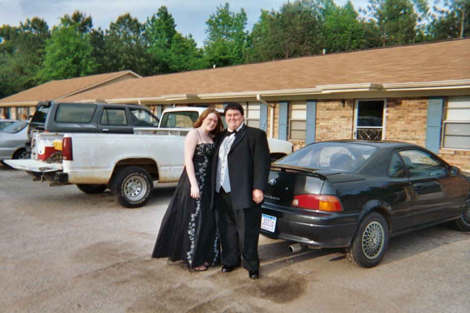
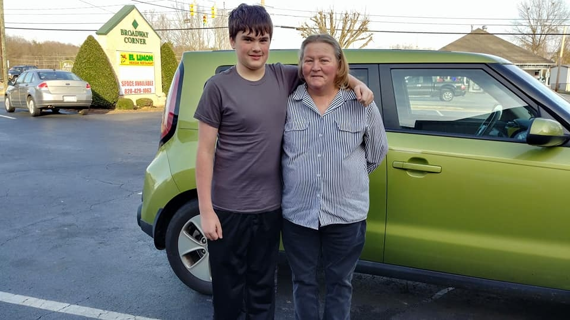

My teenage life brought me sorrow, My Maw maw passed away just as I entered High School. I went through a rebellious phase, but I endured and finished high school, but what now. I decided not to go to the local tech school or college just yet, i wanted to work and save some money, but as it goes for most young men, I met a girl, through the internet. We would talk a lot and eventually we considered ourselves a couple and decided since we only lived a few hundred miles from each other that I would move to Alabama and find a job. She was in her last year of school and we were in love. What happens when you're young and dumb, you get pregnant, or she did, I helped.

We had this great kid, but we were broke. She just finished school and I had gotten into a little trouble trying to make ends meet. We decided to move closer to my mom where i could get a better job for the time being and she could go to college while I worked. That didn't go as planned. I went to work in construction for my stepdad and she went to work with my mom at her cleaning business. So now neither of us are in school, but at least we are working. We end up splitting up and I get my kid because she has an unstable life at the time, she still see's and helps with the kid, but he is mainly in my custody. My stepdad helps me get a job in the electrical field.

A few years later, my son is now in school and my mother watches him a lot when i have to work out of town, which is quite often. This gets to be rough on my son so i have to find a way to work in town and make as much money as I do now. My then girlfriend is working in the medical field and tells me of an upcoming class. It works out perfectly because Facebook is building a data center in town and the IBEW is contracted for parts of the job. I can work in town and go to school so when the in town work ends i can start in a new field. I move up by taking more classes and working with actual doctors, I love my new job. Que medical issues. I get diagnosed with kidney disease and have to go on dialysis, soon after COVID hits and i get another medical issue. My job shuts down the office I am working at and since I am on dialysis I can get disability and stay at home for a while.
I end up losing my left foot due to my health issue. Then I lose my mom right before her birthday in 2023. I want to go back to work. I start thinking of my first passion, computers. I decide after all the work remote stuff from COVID, maybe I can get good at web development and computer science and I want to go back to work, so now here I am, learning and trying to change my life. My son Graduates this year, I want him to see you can do anything you put your mind too.
